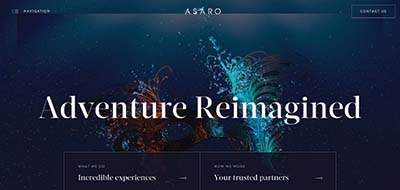
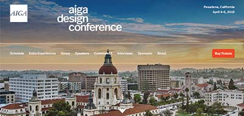

Ten Best Websites
Koox
Site Address: https://koox.co.uk
Site Goals: To promote and inform potential customers of the food and drinks on their menu. The end goal of this site is to sell their product online and easily available for delivery.
Target Audience: Customers that are looking for specific items and need a delivery or a large group order. Customers can also learn the ingredients in the meals.
Navigation: There is a list at the top of each page to navigate the site. To find additional content on the pages, you must scroll through the products. The links have clear names on every page and are consistent throughout the entire site.
Usability Issues: The design is fairly self explanatory in the labels and the names of products available. Moving in and out of the pages is very easy and is overall an easy site to figure out.
Content: The descriptions on the site promote the products with informative text and is up to date.
Design/Layout: The color pallet and typography used helps create a modern and healthy feel. There is good contrast between the background and graphics used around each page.
Ono
Site Address: https://onomeals.zeusjones.com
Site Goals: The mission this site is tying to accomplish is to gain supporters of their beliefs. This site does not actually offer any services, they are only spreading the idea of a business that would offer healthy foods.
Target Audience: People that want an easier way to eat healthy. This site is attracting customers that may need food delivered to their door.
Navigation: The site has four main tabs along the top, and are easily accessible from every page. The links throughout the site are easy to identify because they either change color or a graphic slightly moves near the word.
Usability Issues: Learning how to use the site was easy and interesting to see the creative ways the designer had the photos move down the page. Using the site was easy and did not cause any problems in moving from page to page.
Content: The pages of the site contain a lot of information about the company and their cause. The content is up to date and is presenting new ideas.
Design/Layout: The flow of the page helps direct the reader to each page. The logo at the top is interesting because as you move from page to page it becomes animated. The images used in the site are earthy and organic giving the page a healthy feel.
Yelvy
Site Address: https://yelvy.com
Site Goals: To sell fashionable clothing to young men and women around the world. They offer various choices in currency so that anyone can order the clothing.
Target Audience: The kids and young adults around the world that are looking for a high-end brand of clothing. They offer a small selection of sale items and world wide shipping.
Navigation: There is a menu icon at the top of the page that allows viewers to move from page to page without finding their way to the home page each time. The links are easy to find and when you put the mouse over top the link, it turns into an outline of the word.
Usability Issues: Has a consistent background for each page and displays large icons to easily access the cart, menu, and sale items. There are many ways to get to a page you are looking for and easy to get out of.
Content: The description on each item is informative and lets customers know all features of the product. As you scroll through the list of clothing items available, there is a brief description and the price located under each item.
Design/Layout: The colors are calm and subtle, giving the page a beach feel. The main page has a mostly blue photograph with a tan background, making the image stand out along with the bold black titles. The page is clean and flows well due to the repetitive colors and organization of products.
Femme & Fierce
Site Address: https://femmeandfierce.nl/home
Site Goals: To sell fashionable clothing to young women. The site shows trends and has blogs so viewers can learn about new fashion trends.
Target Audience: Young women that are looking to buy trendy clothing and learn more about fashion. There are workers online that are available to chat with customers and help them in choosing items
Navigation: There is a list of links on the left of the page that will navigate to the rest of the site. This list is persistent on each page and is easy to use. The link names are descriptive, but are all the same color.
Usability Issues: The site is simple in the setup and easy to find a specific item. There is a chat in the corner of the page to ask questions if help is needed. The page is fun and has creative embellishments around the images on the site.
Content: The descriptions of the clothing items are helpful in learning the fabric and features of each item. They help enhance the clothing with glamorous descriptions and high quality photos.
Design/Layout: The color of this page is light pink with red text. This site feels chic and the vibrant photos stand out on the pale background. The scattered photos and moving graphics around the page make it fun and more interesting to look at.
Kikk Festival
Site Address: https://www.kikk.be/2018/
Site Goals: To inform people about their event and sell the tickets to the viewers that are interested in going to the festival.
Target Audience: Creative adults that want to learn more about art, culture, science and technology. They offer workshops and guest speakers for the people that attend the festival.
Navigation: There is a large menu with two separate lists of links that take you to the other pages. This menu bar is persistent on all pages on the site and you can easily tell where you are going to go before you click on a link.
Usability Issues: The layout of the menu bar is very helpful because every page on the site is available through one of the links. This makes it super easy to go back to a previous page.
Content: There are many well written paragraphs describing the event and what it is about. They also offer a very helpful interactive calender so that people can find out where and when an event is happening.
Design/Layout: The background chosen for the site fits the event very well. There are subtle organisms that are sketched into the barker blue and the curser is followed by a large pink dot. The website itself if fun and interactive, which sets the tone for their actual festival.
Ceremony
Site Address: https://ceremonycoffee.com
Site Goals: To promote the Ceremony company and sell coffee, clothing, and supplies. There is also a page to find shop locations, making it easier for potential customers to visit.
Target Audience: For coffee lovers that want easy access to a wide range of coffee flavors.
Navigation: There is a sandwich menu that displays the options across the top of the page, which is consistent on each page making it easy to switch from page to page.
Usability Issues: There is a very unique feature on the site that is an interactive color changing coffee finder. It helps users understand how different coffees taste and guides them to try new flavors.
Content: The descriptions are appealing and enhance the products. They are well written and use captivating words to pull the viewers in.
Design/Layout: The color palette use is light with dark text, making it easy to read and stand out. The graphics on the pages are subtle, but add to the creativity in the page. Most pictures are centered and the descriptions are along the side.
Middle Child
Site Address: https://middlechildphilly.com
Site Goals: To sell the food and drink items on their menu. The company is also promoting their business by making it accessible on the internet. People interested in the business can visit the page and find the menu items, location, and hours.
Target Audience: This website is for potential customers that are looking for a sandwich shop. They offer catering, so this opens up their audience to businesses that are hosting clients.
Navigation: There is a sandwich bar that drops down a menu for the site that is available on every page. The links are very easy to identify and move from one page to the next.
Usability Issues: The use of the website was simple and easy to learn. There is a consistent bar of links to maneuver from page to page.
Content: The food and drink menu shows an image of the item if you hold the mouse over the word. The site is newly updated and uses accurate descriptions of their products.
Design/Layout: The site uses a basic palette of green and white, giving the page a sleek look. The plain background helps the page flow and keep it clutter free. The text on the pages are bold and clean making it easy to read the titles and menu.
G-Star Raw
Site Address: https://www.g-star.com/en_us
Site Goals: To sell trendy clothing to men and women in various parts of the world. They offer a lot of different items and always have free shipping available for their customers.
Target Audience: Men and women that are searching for trendy and high quality outfits. The items are highly priced so the stores are in wealthy areas.
Navigation: There is a list of links across the top of the page that take you to the cart, account, and search bar. Also located in the top left of the page is the sandwich menu to select the category of clothing you are looking for.
Usability Issues: The movement from page to page is very simple due to the persistent menu bar on each page. There are filters and various ways to sort the products to find what you are looking for.
Content: There are too descriptive sections to each piece of clothing that goes into detail about features and fabrics for each product. There are also diagrams to help explain the quality of the items.
Design/Layout: The palette used for the page is black and white with bits of red to highlight the sale items. The photos of the page are vivid and stand out on the plain background. The items listed are organized in a grid that is right aligned to the page.

Asaro
Site Address: https://asaro.co.uk
Site Goals: To inform people about their services to make customers events more memorable. They offer exclusive adventures to high-end clients with luxury yachts.
Target Audience: Wealthy families that own luxury yachts and want to have an amazing adventure. Also the captain and crew are informed of new adventures to exceed guest expectations.
Navigation: There is a sandwich menu in the top left corner of the site that is consistent on each page. The pages are all clearly marked and have an arrow graphic to indicate that there is a separate page.
Usability Issues: Finding the menu to the rest of the pages is easy and convenient because it is always there. The links are also easy to recognize because they move with an arrow as you move the mouse over it.
Content: The site does a nice job of describing what they have to offer and who they are appealing to. It is very up to date and brings to life their service through interesting content.
Design/Layout: The background and graphics give the page an underwater feel. Also the direction lines and embellishments throughout each page reminds viewers of the adventure by making it look like a treasure map.

AIGA Design Conference
Site Address: https://designconference.aiga.org/#!/
Site Goals: To promote and inform viewers about their event and organization. They are also selling tickets to people that want to attend the event and offer ways to become a member of AIGA.
Target Audience: Future and current designers that want to learn more about the design world through famous speakers and friendly competitions.
Navigation: There is a persistent horizontal menu across the top of the page that allows viewers to easily move to the desired page. The links are simple white words that turn black when the mouse is on top to indicate that it is a link.
Usability Issues: The website makes completing a task simple and hassle free. The pages are clearly marked so that viewers know exactly where to go.
Content: The site offers informative pages about the workshops and people speaking at the event. There is also a detailed schedule for each day of the event with links leading to more detailed information for the sessions.
Design/Layout: The photos used in the site were vivid and stood out on the white background. All the informational pages are formatted the same with black text, white background, and a large amount of padding on the left side.